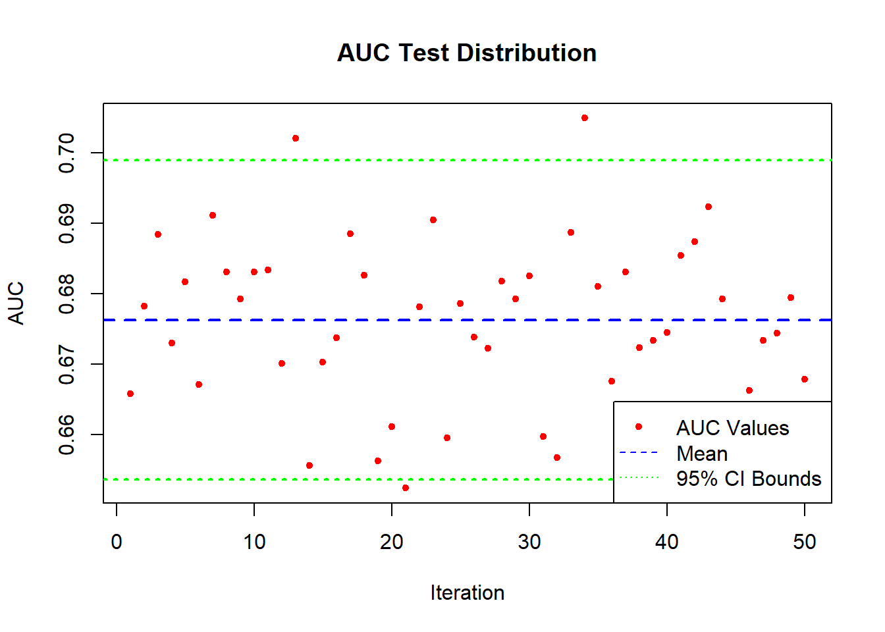
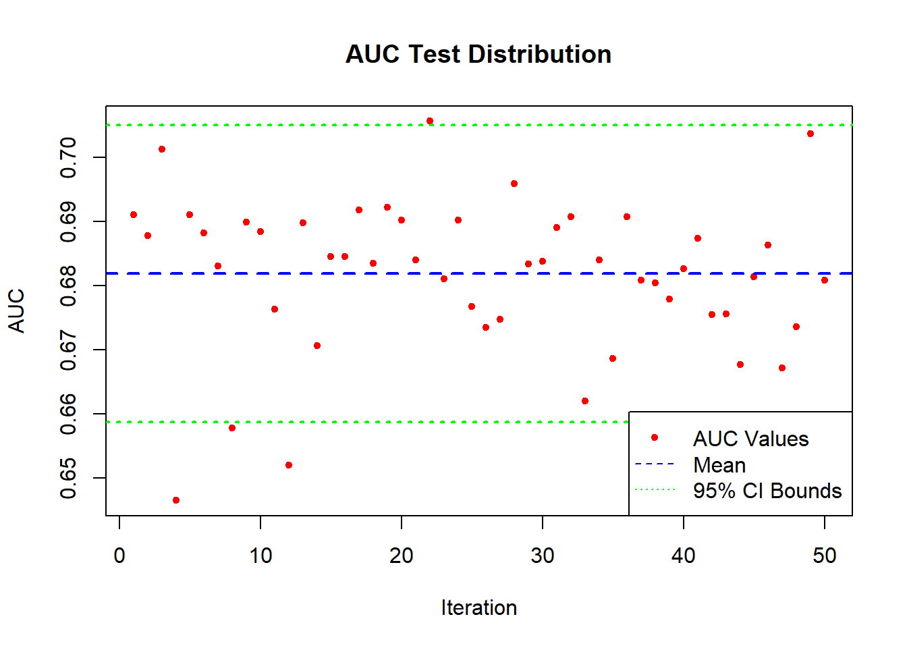

XGBoost Prediction Model
library(data.table)
outcome_data <- fread("predict_outcome.csv.gz")
# Filter out year*_team columns
year_cols <- grep("^year[0-9]+_team", names(outcome_data), value = TRUE)
outcome_data[, (year_cols) := NULL]# Function to check column variance and other potential issues
check_columns <- function(dt) {
# Create a list to store results
col_issues <- list(
zero_var = character(),
all_na = character(),
perfect_cor = character(),
character_cols = character()
)
# First, identify character columns (except my_id)
for(col in names(dt)) {
if(is.character(dt[[col]]) && col != "my_id") {
col_issues$character_cols <- c(col_issues$character_cols, col)
}
}
# Get numeric columns only
numeric_cols <- names(dt)[sapply(dt, is.numeric)]
numeric_cols <- setdiff(numeric_cols, "conversion") # exclude target variable
# Check each numeric column
for(col in numeric_cols) {
# Get column data without NAs
col_data <- dt[[col]][!is.na(dt[[col]])]
# Check for zero variance
if(length(unique(col_data)) == 1) {
col_issues$zero_var <- c(col_issues$zero_var, col)
next
}
# Check for all NA
if(all(is.na(dt[[col]]))) {
col_issues$all_na <- c(col_issues$all_na, col)
}
}
# Check correlations for remaining numeric columns
remaining_cols <- setdiff(numeric_cols,
unique(c(col_issues$zero_var, col_issues$all_na)))
if(length(remaining_cols) > 1) {
# Create correlation matrix
cor_matrix <- cor(dt[, ..remaining_cols], use = "pairwise.complete.obs")
# Find highly correlated pairs
for(i in 1:(length(remaining_cols)-1)) {
for(j in (i+1):length(remaining_cols)) {
if(!is.na(cor_matrix[i,j]) && abs(cor_matrix[i,j]) > 0.9999) {
col_issues$perfect_cor <- c(col_issues$perfect_cor, remaining_cols[j])
}
}
}
}
return(col_issues)
}
# Find problematic columns
issues <- check_columns(outcome_data)
# Print summary of issues found
cat("Found the following issues:\n")## Found the following issues:if(length(issues$character_cols) > 0) {
cat("\nCharacter columns (excluding my_id):", paste(issues$character_cols, collapse=", "))
}
if(length(issues$zero_var) > 0) {
cat("\nZero variance columns:", paste(issues$zero_var, collapse=", "))
}##
## Zero variance columns: offense_player_3_present, offense_player_7_present, offense_player_13_present, defense_player_7_present, defense_player_8_presentif(length(issues$all_na) > 0) {
cat("\nAll NA columns:", paste(issues$all_na, collapse=", "))
}
if(length(issues$perfect_cor) > 0) {
cat("\nPerfectly correlated columns:", paste(unique(issues$perfect_cor), collapse=", "))
}##
## Perfectly correlated columns: offense_player_18_present, offense_player_19_present, offense_player_21_present# Combine all problematic columns
problem_cols <- unique(c(issues$zero_var, issues$all_na,
issues$perfect_cor, issues$character_cols))
# Remove problematic columns
if(length(problem_cols) > 0) {
outcome_data[, (problem_cols) := NULL]
}
# Print summary of remaining columns
cat("\n\nRemoved", length(problem_cols), "problematic columns")##
##
## Removed 8 problematic columns##
## Remaining columns: 248# Load library and prepare data
#library(randomForest)
#rf_data <- copy(outcome_data)[, my_id := NULL]
#rf_data[, conversion := as.factor(conversion)]
# Run RF and get OOB AUC
#rf_model <- randomForest(conversion ~ ., data = rf_data, ntree = 100, importance = TRUE)
#pred_oob <- predict(rf_model, type = "prob")[,2]
#cat("\nOOB AUC:", as.numeric(performance(prediction(pred_oob, as.numeric(as.character(rf_data$conversion))), "auc")@y.values))
# Filter variables based on positive MDA
#mda_scores <- importance(rf_model)[, "MeanDecreaseAccuracy"]
#keep_vars <- unique(c(names(mda_scores[mda_scores > 0]), "my_id", "conversion"))
#outcome_data <- outcome_data[, .SD, .SDcols = keep_vars]
#cat("\nVariables kept:", length(keep_vars), "out of", ncol(rf_data) + 1)## randomForest 4.7-1.1## Type rfNews() to see new features/changes/bug fixes.##
## Attaching package: 'randomForest'## The following object is masked from 'package:ggplot2':
##
## marginlibrary(ROCR) # Added this library
# Initialize variables for RF loop
rf_data <- copy(outcome_data)[, my_id := NULL]
rf_data[, conversion := as.factor(conversion)]
best_auc <- 0
previous_data <- NULL
# Iterative RF process for variable selection
while(TRUE) {
# Run RF
rf_model <- randomForest(conversion ~ ., data = rf_data, ntree = 100, importance = TRUE)
pred_oob <- predict(rf_model, type = "prob")[,2]
# Calculate OOB AUC using ROCR
pred <- prediction(pred_oob, as.numeric(as.character(rf_data$conversion)))
current_auc <- as.numeric(performance(pred, "auc")@y.values)
cat("\nCurrent AUC:", round(current_auc, 4), "with", ncol(rf_data)-1, "variables")
# Check if AUC dropped
if(!is.null(previous_data) && current_auc < best_auc) {
cat("\nAUC dropped, reverting to previous state")
outcome_data <- previous_data
break
}
# Update best and prepare for next iteration
if(current_auc > best_auc) {
best_auc <- current_auc
previous_data <- copy(outcome_data)
}
# Filter variables based on positive MDA
mda_scores <- importance(rf_model)[, "MeanDecreaseAccuracy"]
keep_vars <- unique(c(names(mda_scores[mda_scores > 0]), "my_id", "conversion"))
# Update data for next iteration
outcome_data <- outcome_data[, .SD, .SDcols = keep_vars]
rf_data <- copy(outcome_data)[, my_id := NULL]
rf_data[, conversion := as.factor(conversion)]
}##
## Current AUC: 0.6141 with 246 variables
## Current AUC: 0.6247 with 133 variables
## Current AUC: 0.6366 with 84 variables
## Current AUC: 0.6432 with 62 variables
## Current AUC: 0.6463 with 46 variables
## Current AUC: 0.6417 with 38 variables
## AUC dropped, reverting to previous state##
## Running 100 test iterations with linear model...test_aucs <- c()
test_j_stats <- c()
confusion_matrices <- list()
performance_list <- list()
all_thresholds <- c()
# Convert data for linear model
model_data <- copy(outcome_data)
model_data[, conversion := as.numeric(as.character(conversion))]
# Run 100 tests with linear model
test_aucs <- c()
test_j_stats <- c()
confusion_matrices <- list()
performance_list <- list()
all_thresholds <- c()
# Convert data for linear model
model_data <- copy(outcome_data)
model_data[, conversion := as.numeric(as.character(conversion))]
for(i in 1:100) {
# Create test split
idx <- sample(1:nrow(model_data), size = floor(0.7 * nrow(model_data))) # Changed sampling approach
train_data <- model_data[idx, ]
test_data <- model_data[-idx, ]
# Train model
mdl <- lm(conversion ~ ., data = train_data)
# Get predictions and handle potential issues
p <- predict(mdl, test_data)
# Clean predictions
p[is.na(p)] <- 0 # Handle NAs
p[is.infinite(p)] <- 1 # Handle Inf
p[p > 1] <- 1 # Bound predictions
p[p < 0] <- 0
# Convert predictions and actual values to numeric vectors
pred_values <- as.numeric(p)
actual_values <- as.numeric(test_data$conversion)
# Check for any remaining issues
if(any(is.na(pred_values)) || any(is.infinite(pred_values))) {
cat("Warning: Invalid predictions in iteration", i, "\n")
next
}
# Create ROCR prediction object with error handling
tryCatch({
pred <- prediction(pred_values, actual_values)
# Calculate AUC
perf_auc <- performance(pred, "auc")
test_aucs[i] <- perf_auc@y.values[[1]]
# Calculate ROC curve
perf <- performance(pred, "tpr", "fpr")
performance_list[[i]] <- perf
# Find optimal threshold using Youden's J statistic
tpr <- unlist(perf@y.values)
fpr <- unlist(perf@x.values)
j_stats <- tpr - fpr
best_j_idx <- which.max(j_stats)
optimal_threshold <- unlist(perf@alpha.values)[best_j_idx]
all_thresholds[i] <- optimal_threshold
test_j_stats[i] <- j_stats[best_j_idx]
# Create confusion matrix
pred_class <- ifelse(pred_values >= optimal_threshold, 1, 0)
cm <- table(factor(actual_values, levels=c(1,0)),
factor(pred_class, levels=c(1,0)))
colnames(cm) <- c("Pred 1", "Pred 0")
rownames(cm) <- c("True 1", "True 0")
confusion_matrices[[i]] <- cm
}, error = function(e) {
cat("Error in iteration", i, ":", e$message, "\n")
})
}
# Calculate average confusion matrix
avg_cm <- Reduce('+', confusion_matrices) / length(confusion_matrices)
# Print final results
cat("\nTest Results over 100 iterations:\n")##
## Test Results over 100 iterations:## Mean AUC: 0.6820648## SD AUC: 0.01365833## Mean Youden's J: 0.2851201## SD Youden's J: 0.02387767## Mean Optimal Threshold: 0.5205105cat("95% CI for AUC:", mean(test_aucs) - 1.96 * sd(test_aucs),
"to", mean(test_aucs) + 1.96 * sd(test_aucs), "\n")## 95% CI for AUC: 0.6552945 to 0.7088351##
## Average Confusion Matrix:##
## Pred 1 Pred 0
## True 1 409.46 218.55
## True 0 212.03 365.96# Plotting AUC distribution - removed type="o" to not connect dots
plot(test_aucs, col="red", pch=20,
main="AUC Test Distribution",
xlab="Iteration", ylab="AUC")
abline(h=mean(test_aucs), col="blue", lwd=2, lty=2)
abline(h=mean(test_aucs) - 1.96 * sd(test_aucs), col="green", lwd=2, lty=3)
abline(h=mean(test_aucs) + 1.96 * sd(test_aucs), col="green", lwd=2, lty=3)
legend("bottomright",
legend=c("AUC Values", "Mean", "95% CI Bounds"),
col=c("red", "blue", "green"),
lty=c(NA, 2, 3),
pch=c(20, NA, NA))
# Plot ROC curve with confidence intervals
suppressWarnings({
plot(0:100/100, 0:100/100, type="l", lty=2,
xlab="False Positive Rate", ylab="True Positive Rate",
main="ROC Curve - Linear Model")
# Calculate average ROC curve with confidence intervals
fpr_grid <- seq(0, 1, length.out = 100)
tpr_matrix <- matrix(NA, nrow = length(performance_list), ncol = length(fpr_grid))
for(i in seq_along(performance_list)) {
curve_i <- performance_list[[i]]
tpr_matrix[i,] <- approx(curve_i@x.values[[1]],
curve_i@y.values[[1]],
xout = fpr_grid)$y
}
mean_tpr <- colMeans(tpr_matrix, na.rm = TRUE)
lines(fpr_grid, mean_tpr, col="red", lwd=2)
# Add optimal threshold point
opt_point_idx <- which.min(abs(fpr_grid - mean(all_thresholds)))
points(fpr_grid[opt_point_idx], mean_tpr[opt_point_idx],
col="blue", pch=19, cex=1.5)
# Add confidence interval
ci_lower <- apply(tpr_matrix, 2, function(x) quantile(x, 0.025, na.rm=TRUE))
ci_upper <- apply(tpr_matrix, 2, function(x) quantile(x, 0.975, na.rm=TRUE))
lines(fpr_grid, ci_lower, col="gray", lty=2)
lines(fpr_grid, ci_upper, col="gray", lty=2)
# Add legend
legend("bottomright",
legend=c("Random", "Average ROC", "95% CI", "Optimal Threshold"),
col=c("black", "red", "gray", "blue"),
lty=c(2,1,2,NA),
pch=c(NA,NA,NA,19),
lwd=c(1,2,1,NA))
})# Load required libraries
library(xgboost)
library(ROCR)
library(parallel)
# Prepare the XGBoost matrices
xs <- model.matrix(~ . - 1 - conversion, data = outcome_data)
y <- as.numeric(as.character(outcome_data$conversion))
# Create parameter grid
grid <- expand.grid(
eta = seq(0.001, 0.03, by = 0.01),
max_depth = seq(5, 5, by = 2),
min_child_weight = seq(1, 1, by = 1),
subsample = seq(1, 1, by = 0.2),
colsample_bytree = seq(1, 1, by = 0.2),
lambda = seq(1, 1, by = 1),
alpha = seq(0, 0, by = 1),
gamma = seq(0, 0, by = 0.1),
nrounds = seq(100, 250, by = 50)
)
# Sample grid points
conf_lev <- .95
num_max <- 5
n <- ceiling(log(1-conf_lev)/log(1-num_max/nrow(grid)))
ind <- sample(nrow(grid), n, replace = FALSE)
rgrid <- grid[ind, ]
# Set up parallel processing
nc <- detectCores() - 1
# Validation phase
cat("\nPhase 1: Validation Phase\n")##
## Phase 1: Validation Phasen_validations <- 3
validation_results <- matrix(nrow = nrow(rgrid), ncol = n_validations)
validation_j_stats <- matrix(nrow = nrow(rgrid), ncol = n_validations)
for (j in 1:nrow(rgrid)) {
# cat("\nTesting parameter set", j, "of", nrow(rgrid), "\n")
#cat("eta =", rgrid[j, "eta"], ", nrounds =", rgrid[j, "nrounds"], "\n")
for (i in 1:n_validations) {
# Create validation split
idx <- unique(sample(nrow(xs), nrow(xs), T))
train_x <- xs[idx, ]
train_y <- y[idx]
val_x <- xs[-idx, ]
val_y <- y[-idx]
prm <- list(
booster = "gbtree",
objective = "binary:logistic",
max_depth = rgrid[j, "max_depth"],
eta = rgrid[j, "eta"],
subsample = rgrid[j, "subsample"],
colsample_bytree = rgrid[j, "colsample_bytree"],
gamma = rgrid[j, "gamma"],
min_child_weight = rgrid[j, "min_child_weight"],
alpha = rgrid[j, "alpha"],
lambda = rgrid[j, "lambda"],
nthread = nc
)
dm_train <- xgb.DMatrix(data = train_x, label = train_y)
mdl <- xgb.train(
params = prm,
data = dm_train,
nrounds = rgrid[j, "nrounds"],
verbose = FALSE
)
# Get predictions and ROC metrics
p <- predict(mdl, xgb.DMatrix(data = val_x))
pred <- prediction(p, val_y)
# Calculate AUC
validation_results[j, i] <- performance(pred, "auc")@y.values[[1]]
# Calculate Youden's J Statistic
roc <- performance(pred, "tpr", "fpr")
tpr <- unlist(roc@y.values)
fpr <- unlist(roc@x.values)
j_stats <- tpr - fpr
validation_j_stats[j, i] <- max(j_stats)
}
#cat("Mean AUC:", mean(validation_results[j,]), "\n")
#cat("SD AUC:", sd(validation_results[j,]), "\n")
#cat("Mean J statistic:", mean(validation_j_stats[j,]), "\n")
}
# Select best parameters based on validation AUC
best_params_idx <- which.max(rowMeans(validation_results))
best_params <- rgrid[best_params_idx,]
cat("\nBest parameters:\n")##
## Best parameters:## eta max_depth min_child_weight subsample colsample_bytree lambda alpha
## 11 0.011 5 1 1 1 1 0
## gamma nrounds
## 11 0 250##
## Running 100 test iterations with best parameters...test_aucs <- c()
test_j_stats <- c()
confusion_matrices <- list()
performance_list <- list()
all_thresholds <- c()
# Train final model with best parameters
best_params_list <- as.list(best_params[-which(names(best_params) == "nrounds")])
best_params_list$booster <- "gbtree"
best_params_list$objective <- "binary:logistic"
best_params_list$nthread <- nc
for(i in 1:50) {
#cat("\nIteration", i, "of 100\n")
# Create test split
idx <- unique(sample(nrow(xs), nrow(xs), T))
train_x <- xs[idx, ]
train_y <- y[idx]
test_x <- xs[-idx, ]
test_y <- y[-idx]
# Train model
dm_train <- xgb.DMatrix(data = train_x, label = train_y)
mdl <- xgb.train(
params = best_params_list,
data = dm_train,
nrounds = best_params[["nrounds"]],
verbose = FALSE
)
# Get predictions
p <- predict(mdl, xgb.DMatrix(data = test_x))
pred <- prediction(p, test_y)
# Calculate AUC
test_aucs[i] <- performance(pred, "auc")@y.values[[1]]
# Calculate ROC curve and store
perf <- performance(pred, "tpr", "fpr")
performance_list[[i]] <- perf
# Find optimal threshold using Youden's J statistic
tpr <- unlist(perf@y.values)
fpr <- unlist(perf@x.values)
j_stats <- tpr - fpr
best_j_idx <- which.max(j_stats)
optimal_threshold <- unlist(perf@alpha.values)[best_j_idx]
all_thresholds[i] <- optimal_threshold
test_j_stats[i] <- j_stats[best_j_idx]
# Create confusion matrix with optimal threshold (1-0 order with TP in top left)
pred_class <- ifelse(p >= optimal_threshold, 1, 0)
cm <- table(factor(test_y, levels=c(1,0)),
factor(pred_class, levels=c(1,0)))
colnames(cm) <- c("Pred 1", "Pred 0")
rownames(cm) <- c("True 1", "True 0")
confusion_matrices[[i]] <- cm
}
# Calculate average confusion matrix
avg_cm <- Reduce('+', confusion_matrices) / length(confusion_matrices)
# Print final results
cat("\nTest Results over 100 iterations:\n")##
## Test Results over 100 iterations:## Mean AUC: 0.6719863## SD AUC: 0.009754323## Mean Youden's J: 0.2691155## SD Youden's J: 0.01939396## Mean Optimal Threshold: 0.521184cat("95% CI for AUC:", mean(test_aucs) - 1.96 * sd(test_aucs),
"to", mean(test_aucs) + 1.96 * sd(test_aucs), "\n")## 95% CI for AUC: 0.6528678 to 0.6911048##
## Average Confusion Matrix:##
## Pred 1 Pred 0
## True 1 508.26 260.88
## True 0 278.58 432.84# Plotting AUC distribution - removed type="o" to not connect dots
plot(test_aucs, col="red", pch=20,
main="AUC Test Distribution",
xlab="Iteration", ylab="AUC")
abline(h=mean(test_aucs), col="blue", lwd=2, lty=2)
abline(h=mean(test_aucs) - 1.96 * sd(test_aucs), col="green", lwd=2, lty=3)
abline(h=mean(test_aucs) + 1.96 * sd(test_aucs), col="green", lwd=2, lty=3)
legend("bottomright",
legend=c("AUC Values", "Mean", "95% CI Bounds"),
col=c("red", "blue", "green"),
lty=c(NA, 2, 3),
pch=c(20, NA, NA))
# Plot ROC curve with confidence intervals
plot(0:100/100, 0:100/100, type="l", lty=2,
xlab="False Positive Rate", ylab="True Positive Rate",
main="ROC Curve")
# Calculate average ROC curve with confidence intervals
fpr_grid <- seq(0, 1, length.out = 100)
tpr_matrix <- matrix(NA, nrow = length(performance_list), ncol = length(fpr_grid))
for(i in seq_along(performance_list)) {
curve_i <- performance_list[[i]]
tpr_matrix[i,] <- approx(curve_i@x.values[[1]],
curve_i@y.values[[1]],
xout = fpr_grid)$y
}
mean_tpr <- colMeans(tpr_matrix, na.rm = TRUE)
lines(fpr_grid, mean_tpr, col="red", lwd=2)
# Add optimal threshold point
opt_point_idx <- which.min(abs(fpr_grid - mean(all_thresholds)))
points(fpr_grid[opt_point_idx], mean_tpr[opt_point_idx],
col="blue", pch=19, cex=1.5)
# Add confidence interval
ci_lower <- apply(tpr_matrix, 2, function(x) quantile(x, 0.025, na.rm=TRUE))
ci_upper <- apply(tpr_matrix, 2, function(x) quantile(x, 0.975, na.rm=TRUE))
lines(fpr_grid, ci_lower, col="gray", lty=2)
lines(fpr_grid, ci_upper, col="gray", lty=2)
# Add legend
legend("bottomright",
legend=c("Random", "Average ROC", "95% CI", "Optimal Threshold"),
col=c("black", "red", "gray", "blue"),
lty=c(2,1,2,NA),
pch=c(NA,NA,NA,19),
lwd=c(1,2,1,NA))
# Load required libraries
library(data.table)
library(xgboost)
library(ROCR)
library(parallel)
# Prepare the XGBoost matrices
xs <- model.matrix(~ . - 1 - conversion, data = outcome_data)
y <- as.numeric(as.character(outcome_data$conversion))
# Create parameter grid - only tune eta and nrounds
grid <- expand.grid(
eta = seq(0.001, 0.03, by = 0.01),
nrounds = seq(50, 500, by = 50)
)
# Sample grid points
conf_lev <- .95
num_max <- 5
n <- ceiling(log(1-conf_lev)/log(1-num_max/nrow(grid)))
ind <- sample(nrow(grid), n, replace = FALSE)
rgrid <- grid[ind, ]
# Set up parallel processing
nc <- detectCores() - 1
# Validation phase
cat("\nPhase 1: Validation Phase\n")##
## Phase 1: Validation Phasen_validations <- 3
validation_results <- matrix(nrow = nrow(rgrid), ncol = n_validations)
validation_j_stats <- matrix(nrow = nrow(rgrid), ncol = n_validations)
for (j in 1:nrow(rgrid)) {
#cat("\nTesting parameter set", j, "of", nrow(rgrid), "\n")
#cat("eta =", rgrid[j, "eta"], ", nrounds =", rgrid[j, "nrounds"], "\n")
for (i in 1:n_validations) {
# Create validation split
idx <- unique(sample(nrow(xs), nrow(xs), T))
train_x <- xs[idx, ]
train_y <- y[idx]
val_x <- xs[-idx, ]
val_y <- y[-idx]
prm <- list(
booster = "gblinear",
objective = "binary:logistic",
eta = rgrid[j, "eta"],
nthread = nc
)
dm_train <- xgb.DMatrix(data = train_x, label = train_y)
mdl <- xgb.train(
params = prm,
data = dm_train,
nrounds = rgrid[j, "nrounds"],
verbose = FALSE
)
# Get predictions and ROC metrics
p <- predict(mdl, xgb.DMatrix(data = val_x))
pred <- prediction(p, val_y)
# Calculate AUC
validation_results[j, i] <- performance(pred, "auc")@y.values[[1]]
# Calculate Youden's J Statistic
roc <- performance(pred, "tpr", "fpr")
tpr <- unlist(roc@y.values)
fpr <- unlist(roc@x.values)
j_stats <- tpr - fpr
validation_j_stats[j, i] <- max(j_stats)
}
#cat("Mean AUC:", mean(validation_results[j,]), "\n")
#cat("SD AUC:", sd(validation_results[j,]), "\n")
#cat("Mean J statistic:", mean(validation_j_stats[j,]), "\n")
}
# Select best parameters based on validation AUC
best_params_idx <- which.max(rowMeans(validation_results))
best_params <- rgrid[best_params_idx,]
cat("\nBest parameters:\n")##
## Best parameters:## eta nrounds
## 14 0.011 250##
## Running X test iterations with best parameters...test_aucs <- c()
test_j_stats <- c()
confusion_matrices <- list()
performance_list <- list()
all_thresholds <- c()
# Train final model with best parameters
best_params_list <- as.list(best_params[-which(names(best_params) == "nrounds")])
best_params_list$booster <- "gblinear"
best_params_list$objective <- "binary:logistic"
best_params_list$nthread <- nc
for(i in 1:50) {
#cat("\nIteration", i, "of 100\n")
# Create test split
idx <- unique(sample(nrow(xs), nrow(xs), T))
train_x <- xs[idx, ]
train_y <- y[idx]
test_x <- xs[-idx, ]
test_y <- y[-idx]
# Train model
dm_train <- xgb.DMatrix(data = train_x, label = train_y)
mdl <- xgb.train(
params = best_params_list,
data = dm_train,
nrounds = best_params[["nrounds"]],
verbose = FALSE
)
# Get predictions
p <- predict(mdl, xgb.DMatrix(data = test_x))
pred <- prediction(p, test_y)
# Calculate AUC
test_aucs[i] <- performance(pred, "auc")@y.values[[1]]
# Calculate ROC curve and store
perf <- performance(pred, "tpr", "fpr")
performance_list[[i]] <- perf
# Find optimal threshold using Youden's J statistic
tpr <- unlist(perf@y.values)
fpr <- unlist(perf@x.values)
j_stats <- tpr - fpr
best_j_idx <- which.max(j_stats)
optimal_threshold <- unlist(perf@alpha.values)[best_j_idx]
all_thresholds[i] <- optimal_threshold
test_j_stats[i] <- j_stats[best_j_idx]
# Create confusion matrix with optimal threshold (1-0 order with TP in top left)
pred_class <- ifelse(p >= optimal_threshold, 1, 0)
cm <- table(factor(test_y, levels=c(1,0)),
factor(pred_class, levels=c(1,0)))
colnames(cm) <- c("Pred 1", "Pred 0")
rownames(cm) <- c("True 1", "True 0")
confusion_matrices[[i]] <- cm
}
# Calculate average confusion matrix
avg_cm <- Reduce('+', confusion_matrices) / length(confusion_matrices)
# Print final results
cat("\nTest Results over 100 iterations:\n")##
## Test Results over 100 iterations:## Mean AUC: 0.680117## SD AUC: 0.01082739## Mean Youden's J: 0.2804939## SD Youden's J: 0.01837918## Mean Optimal Threshold: 0.5154228cat("95% CI for AUC:", mean(test_aucs) - 1.96 * sd(test_aucs),
"to", mean(test_aucs) + 1.96 * sd(test_aucs), "\n")## 95% CI for AUC: 0.6588953 to 0.7013387##
## Average Confusion Matrix:##
## Pred 1 Pred 0
## True 1 527.32 241.22
## True 0 288.72 422.70# Plotting AUC distribution - removed type="o" to not connect dots
plot(test_aucs, col="red", pch=20,
main="AUC Test Distribution",
xlab="Iteration", ylab="AUC")
abline(h=mean(test_aucs), col="blue", lwd=2, lty=2)
abline(h=mean(test_aucs) - 1.96 * sd(test_aucs), col="green", lwd=2, lty=3)
abline(h=mean(test_aucs) + 1.96 * sd(test_aucs), col="green", lwd=2, lty=3)
legend("bottomright",
legend=c("AUC Values", "Mean", "95% CI Bounds"),
col=c("red", "blue", "green"),
lty=c(NA, 2, 3),
pch=c(20, NA, NA))
# Plot ROC curve with confidence intervals
plot(0:100/100, 0:100/100, type="l", lty=2,
xlab="False Positive Rate", ylab="True Positive Rate",
main="ROC Curve")
# Calculate average ROC curve with confidence intervals
fpr_grid <- seq(0, 1, length.out = 100)
tpr_matrix <- matrix(NA, nrow = length(performance_list), ncol = length(fpr_grid))
for(i in seq_along(performance_list)) {
curve_i <- performance_list[[i]]
tpr_matrix[i,] <- approx(curve_i@x.values[[1]],
curve_i@y.values[[1]],
xout = fpr_grid)$y
}
mean_tpr <- colMeans(tpr_matrix, na.rm = TRUE)
lines(fpr_grid, mean_tpr, col="red", lwd=2)
# Add optimal threshold point
opt_point_idx <- which.min(abs(fpr_grid - mean(all_thresholds)))
points(fpr_grid[opt_point_idx], mean_tpr[opt_point_idx],
col="blue", pch=19, cex=1.5)
# Add confidence interval
ci_lower <- apply(tpr_matrix, 2, function(x) quantile(x, 0.025, na.rm=TRUE))
ci_upper <- apply(tpr_matrix, 2, function(x) quantile(x, 0.975, na.rm=TRUE))
lines(fpr_grid, ci_lower, col="gray", lty=2)
lines(fpr_grid, ci_upper, col="gray", lty=2)
# Add legend
legend("bottomright",
legend=c("Random", "Average ROC", "95% CI", "Optimal Threshold"),
col=c("black", "red", "gray", "blue"),
lty=c(2,1,2,NA),
pch=c(NA,NA,NA,19),
lwd=c(1,2,1,NA))
